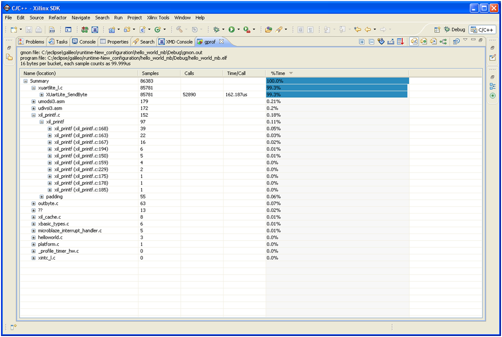

Profile overview
The Xilinx Profiling view in Xilinx® SDK presents a view of your profiling results to visualize the statistics for the profiled Executable and Linkable Format (ELF) file.
The Xilinx Profiling view comprises the following columns:
| Column | Description |
|---|---|
| Name | Name of the function and the file in which it resides |
| Samples | Number of times the profile timer interrupt handler detected that the program executed the corresponding function |
| Calls | Number of calls made to the corresponding function |
| Time/Call | Time usage per function call invocation |
| %Time | Percentage of time spent in the function |
An example of the profiling results view is shown below.

Copyright © 1995-2013 Xilinx, Inc. All rights reserved.